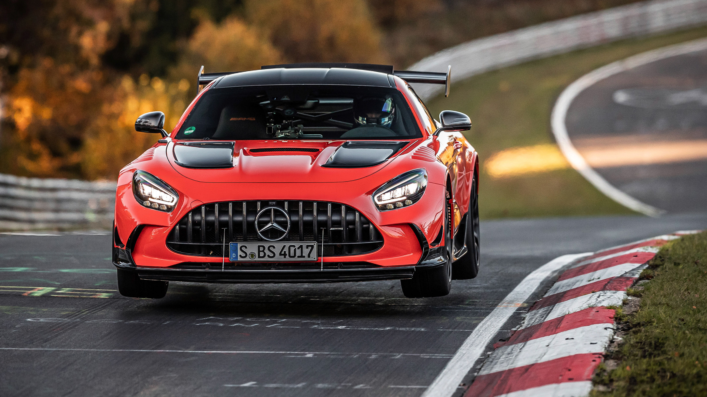
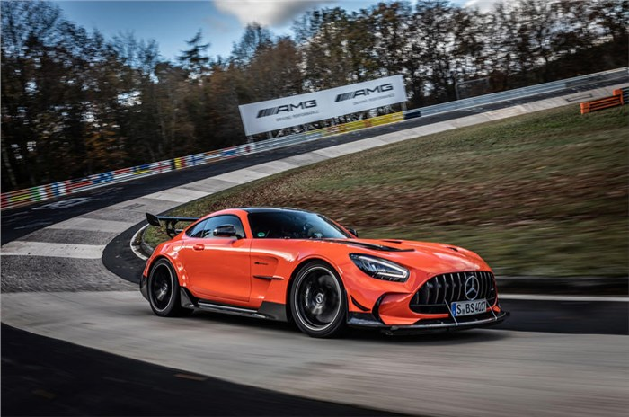
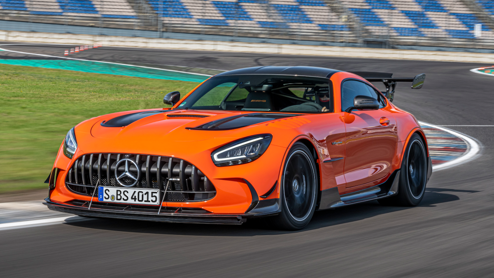

#3 Mercedes-AMG Black Series
Mercedes-AMG Black Series to seria wyjątkowych i potężnych samochodów sportowych, które są przeznaczone do jazdy na torze i zapewniają niesamowite wrażenia za kierownicą.
Specyfikacje
Mercedes-AMG Black Series sam w sobie to oznaczenie, które sugeruje, że te samochody są niezwykle potężne. Oto niektóre z cech charakteryzujących te modele:
- Moc: Zazwyczaj ponad 600 koni mechanicznych
- Wysokoobrotowe silniki V8
- Wyjątkowa aerodynamika
- Oszałamiające osiągi
Rekord na Nürburgring
Mercedes-AMG Black Series ustanowił rekord na torze Nürburgring Nordschleife jako najszybszy samochód produkcyjny. Czas okrążenia wyniósł imponujące 6:48.047 minuty. To potwierdza niesamowite osiągi tego samochodu na jednym z najtrudniejszych torów wyścigowych na świecie.
Design
Mercedes-AMG Black Series wyróżnia się agresywnym designem, który obejmuje szerokie nadkola, duże wloty powietrza i imponujące detale aerodynamiczne. To samochody, które wyglądają i zachowują się jak prawdziwe maszyny wyścigowe.
